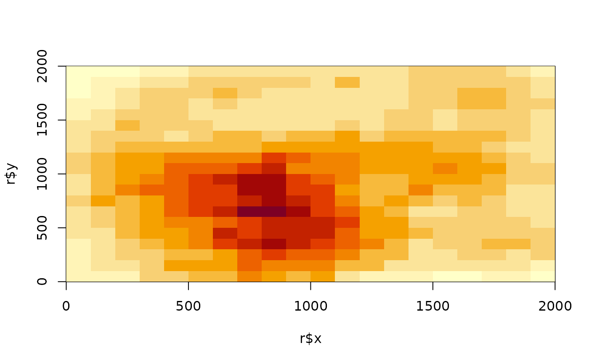

Asks which places are at most risk in the coming days, given where and
when crimes happened recently. Burglary risk is raised near a recent
burglary for a few weeks (the near-repeat pattern), so Bowers, Johnson
and Pease (2004) score each cell of a grid by the recent incidents near
it, each weighted down with its distance and its age:
$$risk(u) = \sum_j \frac{1}{1 + d_j / cell} \cdot \frac{1}{1 +
(at - t_j) / tunit}$$
over the incidents j of the tw time units before at whose distance
d_j from the cell's centre is at most bw (in the paper, cells of 50
metres, 400 metres, two months, distances in cells and ages in weeks).
The top share of the cells with the highest risk are the hot cells,
and the incidents of the following ahead time units test them: the
share of those incidents that fell in hot cells (the hit rate) and that
share over the hot cells' share of the area, the predictive accuracy
index of Chainey, Tompson and Uhlig (2008).
Arguments
- x, y
The points in planar coordinates (project longitude and latitude with
eqproj()first):xandynumeric vectors of equal length, orxa matrix or data frame with columns namedxandy. At least two points; no missing values.- t
The time of each incident (days, say): finite numbers.
- at
The moment of the forecast: incidents before it make the risk, incidents from it on test it.
- win
The study rectangle
c(xmin, xmax, ymin, ymax), cut into square cells of sidecellfrom its lower left corner.- cell
The side of a cell: one positive number.
- bw
NULLfor 8 cells, or the distance within which an incident raises a cell's risk: one positive number.- tw
The time before
atwithin which an incident counts: one positive number.- tunit
The unit of age in the weight (7 for weeks when
tis in days): one positive number.- top
The share of the cells marked hot: above 0 and at most 1.
- ahead
The time after
atwhose incidents test the forecast: one number from 0.
Value
An object of class prohs, a list: x, y, the centres of the
grid's columns and rows; z, the risk, a matrix with one row per x
and one column per y; hot, a logical matrix of the hot cells (the
ceiling(top * cells) of highest risk with any, ties by position);
eval, a named vector: n, the incidents in [at, at + ahead)
inside win, hits, those in hot cells, hit, area (the hot share
of the cells) and pai; and par.
References
Bowers, K. J., Johnson, S. D. and Pease, K. (2004). Prospective hot-spotting: the future of crime mapping? British Journal of Criminology, 44(5), 641-658. doi:10.1093/bjc/azh036
Chainey, S., Tompson, L. and Uhlig, S. (2008). The utility of hotspot mapping for predicting spatial patterns of crime. Security Journal, 21(1-2), 4-28. doi:10.1057/palgrave.sj.8350066
See also
knxnr() for the near-repeat pattern itself.
Examples
set.seed(6)
n <- 300
p <- cbind(x = runif(n, 0, 2000), y = runif(n, 0, 2000))
day <- sort(sample(1:120, n, TRUE))
r <- prohs(p, t = day, at = 100, win = c(0, 2000, 0, 2000), cell = 100,
bw = 400, ahead = 14)
r$eval
#> n hits hit area pai
#> 36.0000000 4.0000000 0.1111111 0.1000000 1.1111111
image(r$x, r$y, r$z)
